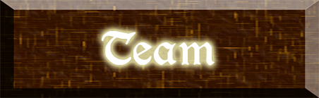

Fruit of the Fallen is an educational game with the emphasis on game. In this RPG, you travel through the land as Sir Apple. Enemies you encounter will test you on your knowledge of a chosen language. As enemies get more difficult, you will either need to develop a better understanding of the language, or attain better gear. Both of which can be acquired by defeating more monsters! Bosses test how fluent you have become in the language, which ensures you are learning practical, useful information. Before you know it, you will be a master. Come take up the challenge and learn a new language in a fun, interactive way.
